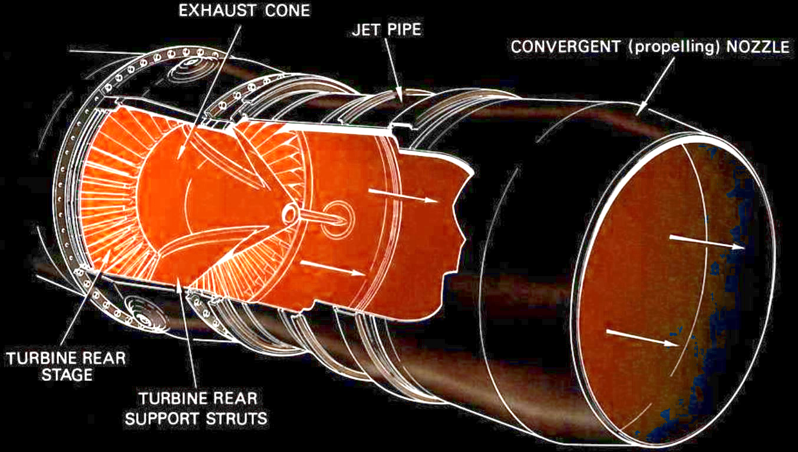

SiC Micro Hot Wires for Flow Measurement in Harsh Environments
-
Univ. Lille, CNRS, Centrale Lille, Université Polytechnique Hauts-de-France, UMR 8520–IEMN,
59000 Lille, France. -
von Karman Institute, Waterloosesteenweg 72,
B–1640, Rhode-Saint-Genèse, Belgium. -
Sensors Automation Lab, Endress+Hauser Process Solutions (DE) GmbH,
Freiburg, Germany. -
Centre de Recherche sur l’Hétéro-Épitaxie et ses Applications, Rue Bernard Grégory,
06560 Valbonne, France.
What is turbulence... and how to measure it?
Big whorls have little whorls,
Which feed on their velocity;
And little whorls have lesser whorls,
And so on to viscosity
(in the molecular sense).
—Richardson, 1922
Kolmogorov microscales
Thermal anemometry
\[ \frac{\Delta R}{R} = \text{TCR}\cdot\Delta T \]
- Easily miniaturisable to reach these spatio-temporal scales
Agenda
-

Context
- The need to measure in harsh environments
- SiC as an ideal candidate
-
Realization
- SiC hot wires
- Flowchart
-
Characterization
- Thermoresistive properties
- Under airflow
- Conclusion & perspectives
1.
Context: the need to measure
... in harsh environments
$ 1 000 000 to anyone who solves Navier-Stokes!
How do we optimize aerodynamic properties of planes cars, etc.?
- Wind tunnel testing of scale models
- simulation models
- in situ measurements generate data to feed the simulation models
to implement passive, active and reactive flow control strategies.
From Rolls-Royce, The Jet Engine ISBN: 978-1-119-06599-9
→ metal probes not suitable because of mechanical, thermal & chemical instability.
No thermal sensor for hot and reactive flows.
1. Context: SiC as harsh environment material
1999: SiC floating-mass accelerometer
Mehregany & Zorman, 1999 DOI: 10/dpv557
2003: NASA SiC cantilever flow sensor for harsh environments → planned to go on Venus missions

Okojie, 2003 (patent) DOI: 10/dpv557
2022: SiC IC conditioner for strain gauges: +800 °C peak, +500 °C steady
Okojie, 2022 (presentation, NASA Glenn Research Center) NASA NTRS: 20220017890
- Wide bandgap (2.3 eV)
- 2 600 °C sublimation point
- Near inert surface chemistry
2. Realization: SiC suspended insulated micro hot-wires
Why the SiC/Si/Glass sandwich?
SiC cannot be grown on SiO2, we have to transfer on an insulating substrate
2. Realization: fabrication flowchart
3. Characterization: resistance & TCR vs. T°

\[ \frac{\Delta \rho}{\rho} = \text{TCR}\cdot\Delta T \] Typical semiconductor in extrinsic regime: \[ \frac{\rho}{\rho_0} \sim T^{\alpha - 3/2} \cdot e^{\frac{E_\text d}{k_\text B T}} \]
TCR: sensor sensitivity in ppm/K
- SiC: ranging from -700 to +700 ppm/K
- Platinum: ~2 800 ppm/K
3. Characterization: response to airflow

- SiC wire voltage drop of 2 % at 15 m/s
This shows that 3C-SiC as a material can thermally sense airspeed variations
4. Conclusions & perspectives
Futrher perspectives
- Parametric study with dopant concentration variation: optimize the sensitivity?
- Tests in proper wind tunnels for wall shear stress calibration & see if suitable IRL?
- Tests on hot (800 °C - 1000 °C) & corrosive atmospheres: suitable for harsh environments?
Thank you for your attention!